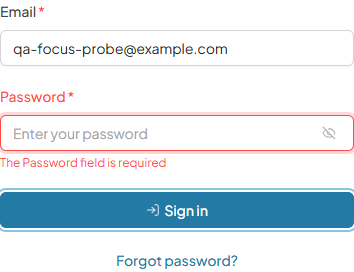
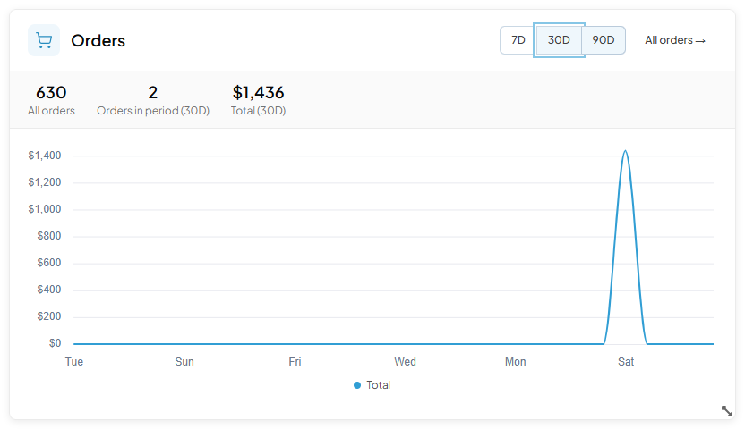

<body>Activating a dashboard widget’s date-range toggle switched the range correctly but left document.activeElement on <body>, so a keyboard user’s next Tab restarted at the top of the document. On a dashboard with 45 focusable elements that cost roughly twenty Tab presses to get back.
mousedown preventDefault(). Both were checked and neither holds. The actual cause: a natively disabled element cannot hold focus. The toggle sets :disabled="chartLoading" on all three buttons while the chart reloads, so activating the focused one blurs it — and the framework’s own Sign in button does the same while its request is in flight, meaning every app on this framework lost focus on login the same way.PR #347: while a button is the one holding focus it announces its state with aria-disabled instead of the native attribute — inert as before, but still focusable, so the user is where they left off when the work finishes. Every other disabled button keeps the native attribute and stays out of the tab order.
vc-button.vue reverted to tag v2.5.0 against its fix-era test file — 3 failed / 15 passed.
× does not disable itself natively while it is the focused element → expected '' to be undefined × treats loading the same way — it is the same disabled state → expected '' to be undefined × announces the disabled state while it is holding focus → expected undefined to be 'true'
Same test file on the fixed code — GREEN 3/3. Then the decisive sighting in a real browser:
a11y tree, mid-flight: button "Sign in" [disabled] [active] Disabled AND holding focus — which a native `disabled` attribute cannot produce. Tab then continued IN PLACE: 7D → 30D 90D → "All orders →" never restarting at the document.
document.activeElement passes with or without this fix. The unit tests therefore assert the attribute only. The focus behaviour itself is provable only in a real browser — which is what the table below measures.| Repro | Before | After | Result |
|---|---|---|---|
| Sign in — focus, press Enter | <body> | stays on the button | PASS 3/3 |
| Range toggle — focus 7D, press Enter | <body> | stays on 7D | PASS 3/3 |
| Range toggle — click 90D | <body> | stays on 90D | PASS 3/3 |
admin account could not be locked and both tickets stayed runnable. The auth request genuinely fired (POST /api/platform/security/login → 200), so the disabled state was real. The three successful sign-ins also never dropped to <body>, but they land on the authenticated workspace root — that is VCST-5670’s repair, not this fix, and was deliberately not counted as evidence here.| # | Check | Result |
|---|---|---|
| 1–3 | The three repros above, 3× each | PASS 3/3 |
| 4 | Tab-continuation discriminator — continues in place, not from document top | PASS |
| 5 | aria-pressed genuinely flipped — the range changed, not just focus preserved | PASS |
| 6 | No form gained a tab stop — ordinary disabled buttons keep native disabled | PASS |
| 7 | aria-disabled button is still inert — no second submit | PASS |
| 8 | No new console errors | 0 errors |
Item 6 is the regression that mattered most — had the fix leaked, every disabled button in every form would have become focusable. Measured on the My Offers blade pagination, where First page and Previous page are both disabled on page 1: Shift+Tab from “Page 1” jumped straight over both to the preceding row checkbox. Re-confirmed on the login page’s empty-form Sign in button. Item 7: Enter and Space on the aria-disabled type=submit button produced no second security/login POST and no form submission.
The fix shipped in a prerelease absent from npm’s latest dist-tag and carrying no GitHub release tag, so version listings alone would have reported it unshipped.
| Step | Observation |
|---|---|
| Ancestry | fix → rc gitHead cb6379d: ahead_by 5, behind_by 0 |
| Served constant | build 55512 declares framework 2.6.0-rc.0 |
| Compiled marker | ref_key:"buttonRef" … disabled:u.value&&!p.value, "aria-disabled":p.value||void 0 … onBlur:…p.value=!1 |
| Marker proven new | aria-disabled: 0 occurrences in vc-button.vue at v2.5.0, 3 at main |
The marker was validated by diffing the source file across refs, not harvested from the PR’s + lines — a + line routinely references an identifier that already existed, which is how a marker’s presence can read as “deployed” for a fix that is thirty commits away.

[disabled] [active]. Pre-fix, focus was on <body> at this moment. (This frame also shows the unrelated misleading-error finding below.)
The Password field is required with the field marked invalid, instead of an invalid-credentials message. Reproducible 3/3. Caveat before anyone files it: only exercised with a nonexistent account, so whether a wrong password on a real account behaves differently is untested.sum(minPx)=1800px > availableWidth=778px. Columns will be squeezed below their minimum widths. on the My Offers list blade at 1920×1080.Cannot set context data: no blade id available, once per sign-in/route event (5× this session). Framework-internal, unrelated to focus.